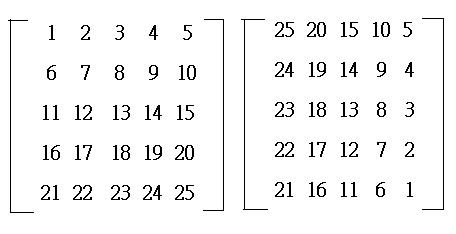
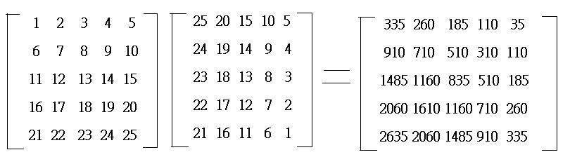

五階矩陣乘法 (5×5 matrix multiplication)
程式由網友 SuperMANganese 提供。
注意: 程式不可以在fx-3650P II上使用。
更新日期: 2014年8月22日
程式可以計算一個 5 × 5 矩陣及另一個 5 × n 矩陣的乘積，其中 n是正整數。
程式需要在 REG Lin 模式下執行，因此在選擇新程式位置後，按 5 1 選用REG Lin模式。
注意: 藍色的英文字為統計模式中的變數，FreqOn 按 Shift MODE ← ← 1，E 是按 EXP，G按 Shift 7 ← 3 。
程式 (579bytes)
FreqOn: ?→A: ?→B: A + E-8B→A: ?→C: ?→D: C + E-8D→B:
?→X: ?→Y: X + E-8Y→C: 1 ; . 5(A + B-2C DT: -1 ; . 5(A-B DT: 1 , 1 ; C DT:
?→M: ?→A: E-50 , 1 ; E50(M + E-8A-C DT: ?→B: ?→C: 0 , 1 ; -Σy DT:
?→D: ?→X: D + E-8X→D: ; D DT: , E-50 ; E50(B + E-8C - D DT:
?→Y: ?→M: Y + E-8M - Σx2 : ?→A: E-34 , 0 ; E68Ans DT: ?→B: E-50 ; -E50Σx DT:
?→C: ; E50(A + E-8B DT: ?→D: 0 ; -n DT: ; C + E-8D DT:
?→X: ?→Y: ?→M: ?→A: ?→B: ?→C: ?→D: X + E-8Y→X: M + E-8A→Y:
E18(B + G , E18(C + G ; 0 DT: D ; 0 DT: While 1: ?→A: ?→B: ?→C: ?→D: ?→M: Fix 3:
ARnd(Σx4) + E8B(Σx4-Rnd(Σx4)) + MRnd(Σx2y) + CRnd(Σx3) + E8D(Σx3-Rnd(Σx3: Norm 1◢ Fix 3:
BRnd(Σxy) + E8C(Σxy-Rnd(Σxy)) + E8A(Σx2y-Rnd(Σx2y)) + DRnd(Σy) + E8M(Σy-Rnd(Σy: Norm 1◢ Fix 3:
ARnd(Σy2) + E8B(Σy2-Rnd(Σy2)) + MRnd(Σx) + CRnd(Σx2) + E8D(Σx2-Rnd(Σx2: Norm 1◢ Fix 3:
BRnd(n) + E8C(nRnd(n)) + E8A(Σx-Rnd(Σx)) + DRnd(X) + E8M(X-Rnd(X: Norm 1◢ Fix 3: ; 0 DT:
ARnd(Y) + E8B(Y-Rnd(Y)) + MAns + CRnd(E-18(minX + maxX)) + DRnd(E-18(minY + maxY: Norm 1◢ WhileEnd
例題: 計算

按 Prog 1 再按 1 EXE 2 EXE 3 EXE 4 EXE 5 EXE 6 EXE 7 EXE 8 EXE 9 EXE 10 EXE
11 EXE 12 EXE 13 EXE 14 EXE 15 EXE 16 EXE 17 EXE 18 EXE 19 EXE 20 EXE
21 EXE 22 EXE 23 EXE 24 EXE 25 EXE (第一個矩陣，由左至右，上至下輸入)
25 EXE 24 EXE 23 EXE 22 EXE 21 EXE (輸入第二個矩陣，第一欄的數據)
(顯示335) EXE (顯示910) EXE (顯示1485) EXE (顯示2060) EXE (顯示2635) EXE (這五個數值為答案的第一欄)
20 EXE 19 EXE 18 EXE 17 EXE 16 EXE (輸入第二個矩陣，第二欄的數據)
(顯示260) EXE (顯示710) EXE (顯示1160) EXE (顯示1610) EXE (顯示2060) EXE (這五個數值為答案的第二欄)
15 EXE 14 EXE 13 EXE 12 EXE 11 EXE (輸入第二個矩陣，第三欄的數據)
(顯示185) EXE (顯示510) EXE (顯示835) EXE (顯示1160) EXE (顯示1485) EXE (這五個數值為答案的第三欄)
10 EXE 9 EXE 8 EXE 7 EXE 6 EXE (輸入第二個矩陣，第四欄的數據)
(顯示110) EXE (顯示310) EXE (顯示510) EXE (顯示710) EXE (顯示910) EXE (這五個數值為答案的第四欄)
5 EXE 4 EXE 3 EXE 2 EXE 1 EXE (輸入第二個矩陣，第五欄的數據)
(顯示35) EXE (顯示110) EXE (顯示185) EXE (顯示260) EXE (顯示335) EXE (這五個數值為答案的第五欄)
所以

註1: 第一個矩陣的數據輸入限制為有效數字最多七位。
註2.小數點後最多n位(預設為3位, 如欲修改, 請把fix 3 的3改作n)
註3: 若三位小數版, 則 -10000<x<10000 。整數版請將所有fix 3 改作fix 0，則 -10000000<x<10000000。若四位小數版，請將所有fix 3 改作fix 4，則 -1000<x<1000，餘此類推。
註4: 若果是整數版綠色的程式碼亦可以不輸入，只要將第一個fix 3改作fix 0即可。
註5: 5x5矩陣 乘 5xn 矩陣，n最多可以是12，否則會出現datafull。
返回 CASIO fx-50FH、fx-3650P II、fx-50FH II及fx-50F PLUS 程式集